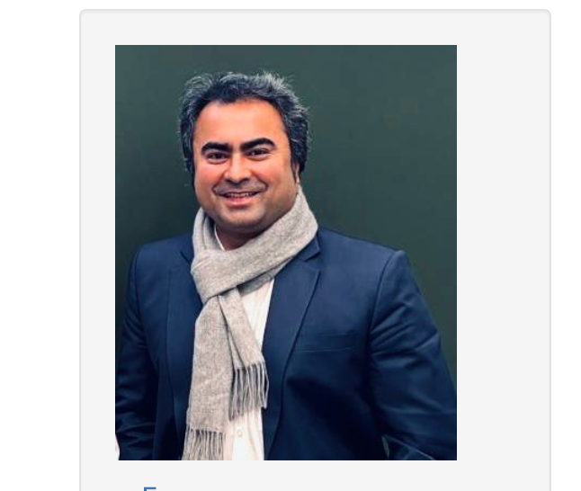
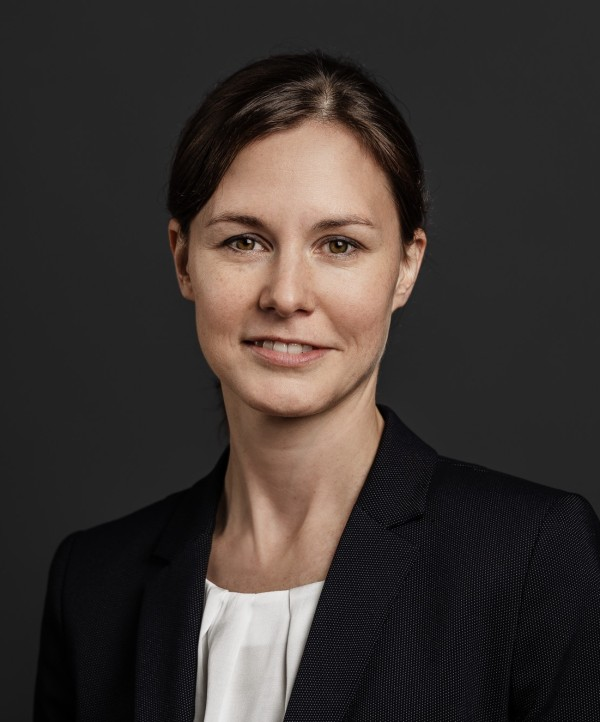
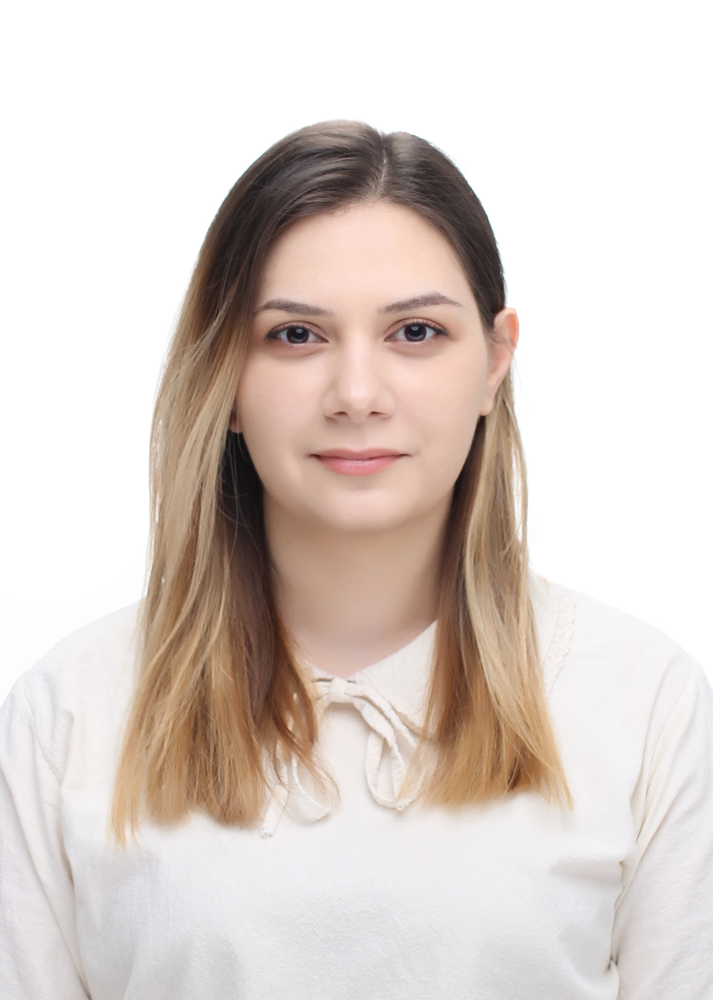
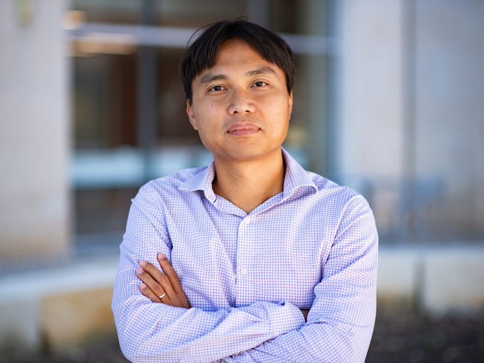
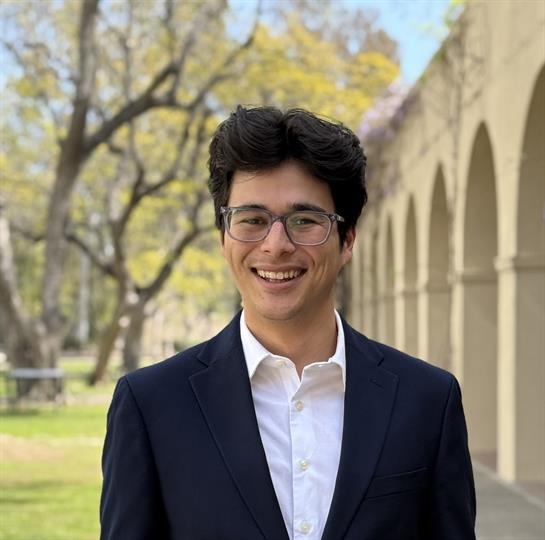
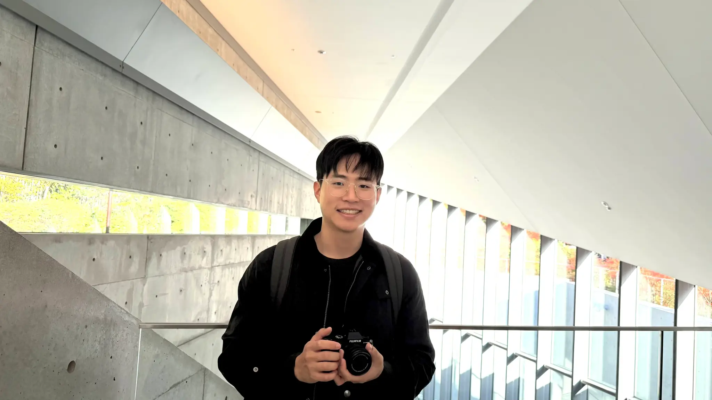

Mayank Shekhar Jha
Université de Lorraine / CRAN, CNRS
France
A full-day academic workshop at ECC 2026 on safe control design and safe learning for safety-critical autonomy, emphasizing methods with provable guarantees, real-time tractability, and demonstrated performance on robotic and cyber-physical platforms.
The workshop brings together researchers working on safe reinforcement learning, optimization-based control, robust prediction, distributionally robust safety, multirobot systems, and data-driven certification.

Université de Lorraine / CRAN, CNRS
France
University of Groningen
The Netherlands

ETH Zürich
Switzerland
ETH Zürich
Switzerland

National Polytechnic University of Armenia / CSIE
Speaker
UT Austin
USA

Tufts University
USA

UCLA
USA
Invited technical talks spanning theory, learning, certification, and deployment.
Moderated panel dedicated to open problems and deployment barriers.
Organizers coordinating the workshop and the broader scientific framing.
Hosted during ECC 2026 at the University of Iceland, including Háskólabíó.
The workshop abstract below is reproduced from the ECC pre-tutorial workshop proposal.
Safety-critical autonomy increasingly relies on learning-enabled controllers that must operate under uncertainty, limited data, and changing environments. This full-day ECC pre-tutorial workshop surveys recent advancements in safe control design and safe learning, emphasizing methods with provable guarantees and demonstrated performance on real robotic and cyber-physical platforms.
The workshop begins with safe reinforcement learning perspectives that embed Control Barrier Function (CBF) invariance constraints into reward shaping and enable safe exploration via input-to-state safety concepts. We then connect optimization-based control and learning, highlighting how data-driven model updates can be integrated within MPC-style safety filters without sacrificing real-time feasibility. A central theme is robustness to uncertainty and nonstationarity: we cover distributionally robust control approaches that hedge against partially known disturbance distributions, and robust conformal prediction techniques that maintain probabilistic safety under interaction-driven and more general distribution shifts beyond the i.i.d. regime.
The workshop further addresses scalability and structure through constrained multi-task reinforcement learning using natural policy gradient and actor-critic methods in both centralized and decentralized settings. Complementing these approaches, we discuss indirect and direct data-driven safety certification, including Hamiltonian learning from trajectory data to construct conservative safe sets. Finally, we examine distributed safety guarantees for multirobot systems via distributed control barrier functions for safe formation control, supported by experimental demonstrations.
This workshop is designed for ECC 2026, which will take place from 7–10 July 2026 in Reykjavík, Iceland. The conference is hosted at the University of Iceland, with activities including Háskólabíó on the university campus.
The workshop is presented as a pre-tutorial event with the tentative date of 7 July 2026. Final room allocation and local logistics will follow the official ECC 2026 conference information.
The programme is organized around foundational questions in safety-critical autonomy, with each talk contributing a distinct perspective on provable safety and practical learning.
Control Barrier Function invariance constraints, safe exploration, input-to-state safety, and model-free learning mechanisms for risk-aware policy improvement.
Robust optimal control formulations that integrate learning of dynamics, objectives, and constraints while preserving safety in closed-loop operation.
Robust conformal prediction methods for maintaining probabilistic safety guarantees when the environment changes or interactions induce non-i.i.d. data.
Risk-sensitive approaches that hedge against partially known disturbance distributions without imposing prohibitive online computational burden.
Natural policy gradient and actor-critic methods for learning a single safe policy across multiple tasks in centralized and decentralized settings.
Direct and indirect safety certification from trajectory data, Hamiltonian learning, and distributed barrier-function approaches for multirobot formation control.
The programme below follows the proposed local-time schedule from opening remarks to panel discussion. Each talk slot is planned as up to 60 minutes including Q&A.
| Time | Programme item |
|---|---|
| 08:00–08:05 | Opening remarks and logistics (Organizers) |
| 08:05–09:05 | Bayu Jayawardhana — Distributed Control with Safety Guarantee for Multirobot Systems |
| 09:05–10:05 | Melanie Zeilinger — Safe Learning in Optimization-Based Control |
| 10:05–10:20 | Coffee break |
| 10:20–11:20 | Lars Lindemann — Safe Control under Distribution Shifts with Robust Conformal Prediction |
| 11:20–12:00 | Astghik Hakobyan — Safety-Critical Control Under Uncertainty Using Distributionally Robust Approaches |
| 12:00–13:30 | Lunch break |
| 13:30–14:30 | Thinh T. Doan — Natural Policy Gradient and Actor-Critic Methods for Constrained Multi-Task Reinforcement Learning |
| 14:30–15:30 | Ryan K. Cosner — Theory-Driven Safe Robot Autonomy |
| 15:30–15:45 | Coffee break |
| 15:45–16:45 | Jason J. Choi — Data-driven Safety Frameworks—Indirect vs. Direct Approaches |
| 16:45–17:45 | Mayank Shekhar Jha — Safe Reinforcement Learning with Provable Guarantees |
| 17:45–18:00 | Panel discussion, open problems, and wrap-up (all speakers) |
Each speaker contributes a distinct research perspective on safety-critical control and learning. Abstracts and biographies are included below in an expandable format.
University of Groningen, The Netherlands
Distributed Control with Safety Guarantee for Multirobot Systems
A review of distributed control frameworks that guarantee safe multirobot operation, with a focus on distributed control barrier functions for safe formation control.
Over the past two decades, the development of multirobot systems has grown rapidly across agriculture, manufacturing, mobility, and high-tech industries. As the number of deployed robots operating in dynamic and constrained environments increases, distributed control frameworks must be able to guarantee safe operation and enforce constraints.
This talk reviews recent progress in the field, with a particular focus on the design of distributed control barrier functions for achieving safe formation control. Experimental results are presented on the formation control of drones and mobile robots.
Bayu Jayawardhana received the B.Eng. degree from Institut Teknologi Bandung (2000), the M.Eng. degree from Nanyang Technological University (2003), and the Ph.D. degree from Imperial College London (2006). He is the Scientific Director of the Dutch Institute of Systems and Control, the Scientific Director of the Engineering and Technology Institute Groningen, and a Full Professor at the University of Groningen.
His research interests include nonlinear systems, systems with hysteresis, optomechatronics, multirobot systems, and systems biology. He is Vice-Chair of Publications in the IFAC Technical Committee on Nonlinear Control Systems and a fellow of the Netherlands Academy of Engineering.
ETH Zürich, Switzerland
Safe Learning in Optimization-Based Control
Safety is framed through constrained optimal control, showing how robustness and learning can be integrated to enable complex autonomous tasks under uncertainty.
Advancing autonomous systems requires not only improved control of complex dynamical systems, but also the ability to achieve complex tasks in challenging environments. This leads to uncertainty at multiple levels. Learning has emerged as a promising means to address these challenges in practice, but guarantees, especially concerning safety, are often still lacking.
This talk highlights results that build on a constrained optimal control paradigm and integrate robustness with learning. It introduces a notion of safety formulated as a planning problem, then addresses robust constraint satisfaction and safe learning of dynamics, objective functions, and constraints. Applications from autonomous racing and robotics illustrate the approach.
Melanie Zeilinger is an Associate Professor in the Department of Mechanical and Process Engineering at ETH Zurich, where she leads Intelligent Control Systems. She received her diploma in Engineering Cybernetics from the University of Stuttgart in 2006 and her Ph.D. in Electrical Engineering from ETH Zurich in 2011.
From 2011 to 2012 she was a postdoctoral fellow at EPFL. From 2012 to 2015 she was a postdoctoral researcher and Marie Curie fellow in a joint program with UC Berkeley and the Max Planck Institute for Intelligent Systems in Tuebingen. From 2018 to 2019 she was a professor at the University of Freiburg, Germany.
ETH Zürich, Switzerland
Safe Control under Distribution Shifts with Robust Conformal Prediction
Robust conformal prediction is used to maintain probabilistic safety guarantees when interaction-driven or more general shifts invalidate i.i.d. assumptions.
Conformal prediction has become an attractive tool for uncertainty quantification in learning-enabled autonomous systems because of its simplicity, generality, and efficiency. Yet many CP-based safety guarantees rely on i.i.d. data assumptions that break down when system changes induce shifts in the data distribution.
This talk advocates robust CP for safe controller design under distribution shift. It introduces the basic CP framework, reviews prior work on probabilistically safe control in dynamic environments, and then addresses interactive settings in which system behavior changes the environment and vice versa. The proposed solution is an episodic framework that updates the controller while analytically adjusting CP results to account for the effect of the update on the environment’s behavior.
The talk concludes by discussing adaptive and distributionally robust CP techniques for handling broader forms of shift beyond the interactive setting.
Lars Lindemann is an Assistant Professor for Algorithmic Systems Theory in the Automatic Control Laboratory at ETH Zürich. From 2023 to 2025 he was an Assistant Professor in the Thomas Lord Department of Computer Science at the University of Southern California, and from 2020 to 2022 he was a Postdoctoral Fellow in the Department of Electrical and Systems Engineering at the University of Pennsylvania.
He received his Ph.D. degree in Electrical Engineering from KTH Royal Institute of Technology in 2020. His research interests include systems and control theory, formal methods, machine learning, and autonomous systems.
National Polytechnic University of Armenia / CSIE
Safety-Critical Control Under Uncertainty Using Distributionally Robust Approaches
Distributionally robust control strategies for autonomous systems with uncertain or only partially characterized disturbance distributions.
Ensuring safety in autonomous systems operating under uncertainty remains a fundamental challenge, particularly in real-time and large-scale settings. This talk explores distributionally robust control frameworks for safety-critical decision-making when disturbance and model uncertainty distributions are unknown or only partially characterized.
Leveraging risk metrics and tools from distributionally robust optimization, the talk presents methods that promote safe operation while maintaining the computational efficiency required for real-world implementation. The discussion spans both sampling-based control for single-agent robotic systems and distributed control strategies for multi-agent systems.
Astghik Hakobyan is an Assistant Professor at the National Polytechnic University of Armenia (NPUA) and a Leading Researcher at the Center of Scientific Innovations and Education and Aerial Robotics Education (CSIE). She earned her B.Sc. in Automation and Control from NPUA in 2018 and her M.Sc. and Ph.D. in Electrical and Computer Engineering from Seoul National University in 2020 and 2023.
She received the Distinguished ECE M.S. Dissertation Award and Distinguished ECE Ph.D. Dissertation Award from SNU. Her research focuses on control and optimization, motion planning, and safe autonomous systems.
UT Austin, USA
Natural Policy Gradient and Actor-Critic Methods for Constrained Multi-Task Reinforcement Learning
A constrained reinforcement-learning framework for finding a single safe policy that can solve multiple tasks in centralized or decentralized settings.
Constrained reinforcement learning is widely recognized as a promising route toward safe autonomy. This talk presents recent work on constrained multi-task reinforcement learning, where the goal is to find a single safe policy that effectively solves multiple tasks at the same time.
The problem is treated in both centralized and decentralized settings. A primal-dual algorithm is introduced that provably converges to the globally optimal solution under exact gradient evaluations. When gradients are unknown, the framework is extended to a sample-based actor-critic method that uses online state, action, and reward samples to recover the optimal policy. The talk also considers extensions to linear function approximation.
Thinh T. Doan is an Assistant Professor in the Department of Aerospace Engineering and Engineering Mechanics at UT Austin. He received his B.S. from Hanoi University of Science and Technology in 2008, and his M.S. and Ph.D. in Electrical and Computer Engineering from the University of Oklahoma and UIUC.
He was a TRIAD postdoctoral fellow at Georgia Tech from 2018 to 2020 and previously served as an Assistant Professor at Virginia Tech. He received the AFOSR YIP and NSF CAREER Awards in 2024 and the 2025 IEEE CSS Antonio Ruberti Young Researcher Award.
Tufts University, USA
Theory-Driven Safe Robot Autonomy
A theory-grounded approach to safe robot autonomy that combines control, learning, and stochastic reasoning across diverse robotic platforms.
Robots can only achieve safe, lifelong autonomy if they can navigate the complex, stochastic uncertainties of the real world while making risk-aware decisions with limited data, sensing, and computational resources.
This talk discusses how tools from control theory, machine learning, and robotics can be combined to achieve that goal. Control Barrier Functions are presented as a core mechanism for safety, first within a deterministic worst-case paradigm and then within a stochastic, risk-sensitive paradigm that enables more nuanced risk management. The talk concludes by showing how theory can guide machine learning-based performance improvements without sacrificing safety, with demonstrations on bipedal, quadrupedal, wheeled, and flying robots.
Ryan K. Cosner is the Glenn R. Stevens Assistant Professor of Mechanical Engineering at Tufts University. He received his Ph.D. in Mechanical Engineering from Caltech in 2025, his M.S. from Caltech in 2021, and his B.S. degree from UC Berkeley in 2019.
In 2022, he interned with the Autonomous Vehicle Research Group at NVIDIA. His interests include nonlinear and stochastic control and machine learning, with applications to dynamic, risk-aware safety-critical robotics.
UCLA, USA
Data-driven Safety Frameworks—Indirect vs. Direct Approaches
A unified comparison between indirect and direct data-driven safety frameworks, including a data-driven Hamiltonian approach for conservative safe-set construction.
Classical model-based safety frameworks such as Hamilton-Jacobi reachability and Control Barrier Functions provide rigorous guarantees but depend on accurate models. To overcome this limitation, recent work has explored data-driven extensions that incorporate empirical information from real-world operation.
This talk contrasts indirect frameworks, where data are used to model or bound uncertainty before being inserted into model-based safety tools, with direct frameworks, where safety certificates are learned from data more directly. A focal example is the proposed Data-Driven Hamiltonian method, which infers safety certificates from trajectory data by approximating the Hamiltonian using observed state-velocity pairs and constructing conservative inner approximations of the true safe set.
The comparison highlights an important conceptual shift from learning models for safety analysis to learning safety itself.
Jason Jangho Choi is an Assistant Professor in the Electrical and Computer Engineering Department at UCLA and the principal investigator of the Safety and Collective Intelligence (SCI) Autonomy Lab. He received his Ph.D. in Mechanical Engineering from UC Berkeley in 2025 and his bachelor’s degree from Seoul National University.
His research focuses on safety assurance for learning-enabled autonomous systems and decentralized multi-agent intelligence. He was recognized as a Robotics: Science and Systems (RSS) Pioneer in 2024.
Université de Lorraine / CRAN, CNRS, France
Safe Reinforcement Learning with Provable Guarantees
Recent advances in safe reinforcement learning for discrete- and continuous-time systems, with emphasis on exploration, saturation constraints, and provable safety guarantees.
This talk presents recent advances in Safe Reinforcement Learning methodologies applicable to both discrete-time and continuous-time systems with provable guarantees. It introduces reinforcement learning in the adaptive dynamic programming tradition, motivates Safe RL, and presents approaches for discrete-time systems where safety is enforced by augmenting Control Barrier Functions into the reward structure.
The talk then addresses safe exploration, highlighting how Input-to-State Stability properties can be exploited to maintain safety during exploration. Within this context, Input-to-State Safety is introduced as a framework for rich, risk-aware exploration that preserves formal safety guarantees. Additional topics include input saturation constraints, boundary-focused exploration, and model-free methods for system-dynamics learning.
Mayank Shekhar Jha is an Associate Professor at École Polytechnique de l’Université de Lorraine (Polytech Nancy) and a researcher at CRAN (CNRS) since 2018. He obtained his Ph.D. in 2015 at École Centrale de Lille and previously held postdoctoral positions at INSA Toulouse and a Research Associate position at the Rolls-Royce Technology Centre at the University of Sheffield.
He has authored around 30 publications, leads a work package in an ANR-funded project on safe heterogeneous robot fleets, and has served as PI or Co-PI on multiple industrial projects, including collaborations with CNES and Dassault Aviation. He is also an external collaborator and visiting researcher at NASA Ames Research Center.
The workshop is organized around complementary expertise in safe reinforcement learning, nonlinear systems, and distributed control for multirobot settings.
Affiliation: Université de Lorraine / CRAN, CNRS, France.
Works on safe reinforcement learning and learning-enabled control for safety-critical systems, with both academic and industrial collaborations.
Affiliation: University of Groningen, The Netherlands.
Works on nonlinear systems and distributed control with applications to multirobot systems, and serves in leadership roles within the Dutch Institute of Systems and Control.
The workshop is designed to leave participants with a structured understanding of both the mathematical foundations and the deployment realities of safe control and learning.
Participants gain a consolidated perspective on the main concepts, guarantees, and design patterns that now define the field of safe control and learning.
The programme surfaces practical constraints around real-time feasibility, robustness, data efficiency, and deployment on robotic platforms.
Open questions include safety under distribution shift, scalable multi-agent guarantees, and direct data-driven certification methods.